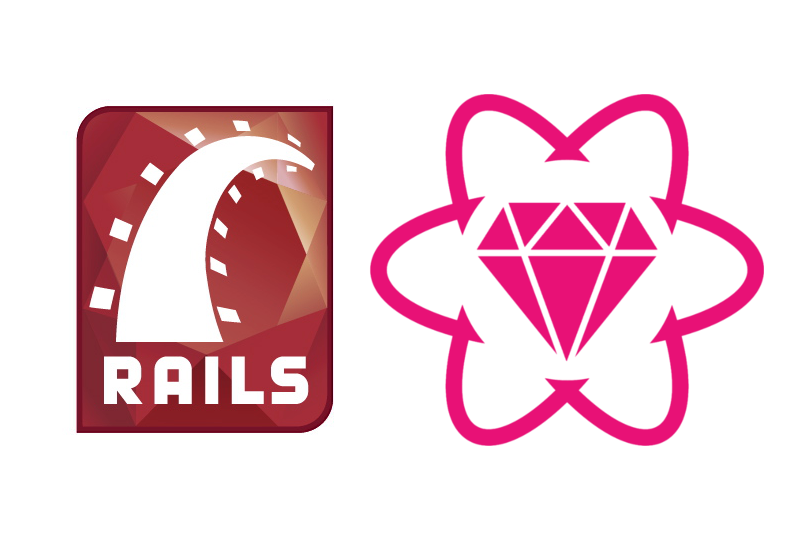

Production mode Tutorial

In this tutorial we are going to learn how to configure one hyperloop app in order to run it in production mode.
RAILS_ENV=production rails s
Step 1: Turning Hyperloop auto_config OFF
The primary difference is that in production you will want to override Hyperloops auto-loader and use normal Rails precompilation.
The first step is turn off Hyperloop's auto_config.
Step 2: Configuring the transport
For development, the default transport mode used by Hyperloop is simple_poller, but for production it is advised to use action_cable or pusher.
Step 3: Configuring Hyperloop
Once you have manually set up your Hyperloop app, we will need to update some files, so Rails knows what to precompile
#config/application.rb
config.autoload_paths -= %W(#{config.root}/app/hyperloop)
config.eager_load_paths -= %W(#{config.root}/app/hyperloop)
config.eager_load_paths += %W(#{config.root}/app/hyperloop/models)
config.autoload_paths += %W(#{config.root}/app/hyperloop/models)
config.eager_load_paths += %W(#{config.root}/app/hyperloop/operations)
config.autoload_paths += %W(#{config.root}/app/hyperloop/operations)
#config/environments/production.rb
config.assets.digest = true
config.public_file_server.enabled = true
#config/initializers/assets.rb
Rails.application.config.assets.precompile += %w( react-server.js components.js )
And don't forget to update your app/policies/application_policy.rb file by removing the unless Rails.env.production?
#app/policies/application_policy.rb
class Hyperloop::ApplicationPolicy
# Allow any session to connect:
always_allow_connection
# Send all attributes from all public models
regulate_all_broadcasts { |policy| policy.send_all }
# Allow all changes to public models
allow_change(to: :all, on: [:create, :update, :destroy]) { true }
end
Step 4: Pre-compiling and running
Once these changes are made, to test the setup on your local machine you will need to manually precompile your assets, by running the following:
RAILS_ENV=production rails assets:precompile
Once the assets are precompiled, you can run your app:
RAILS_ENV=production rails s
You can test your Application on http://localhost:3000.
Once everything is working you can deploy your application to a VPS or Heroku.
Please follow those tutorials to accomplish a proper deployment:
You can find the complete source code of a Helloworld sample Hyperloop app already set up for production mode here:
The best way to get help and contribute is to join our Gitter Chat